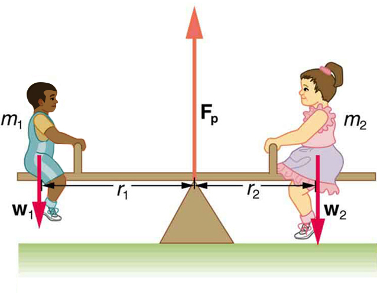

![In the figure, six top views of a door are shown. In the first figure, a force vector is shown in the North West direction. The perpendicular distance of the force from the point of rotation is r. In the second figure, a force is applied in the opposite direction at the same distance from the hinges. In the third figure, a smaller force in applied at the same point. In the next figure, a horizontal force is applied at the same point. In this case, the perpendicular distance from the hinges is shown as r sin theta. In the next figure, force is applied at a distance near the hinges. In the final figure, the force is shown along the direction of hinges toward the handle of the door.](Figure_10_02_01a.jpg)
The original, as published: OpenStax, College Physics 2e, Urone, Hinrichs, section 9.2 The Second Condition for Equilibrium. © Rice University. CC BY-NC-SA 4.0, https://creativecommons.org/licenses/by-nc-sa/4.0/. Imported as published, from https://openstax.org/books/college-physics-2e/pages/9-2-the-second-condition-for-equilibrium
By the end of this section, you will be able to:
The second condition necessary to achieve equilibrium involves avoiding accelerated rotation (maintaining a constant angular velocity). A rotating body or system can be in equilibrium if its rate of rotation is constant and remains unchanged by the forces acting on it. To understand what factors affect rotation, let us think about what happens when you open an ordinary door by rotating it on its hinges.
Several familiar factors determine how effective you are in opening the door. See the figure. First of all, the larger the force, the more effective it is in opening the door—obviously, the harder you push, the more rapidly the door opens. Also, the point at which you push is crucial. If you apply your force too close to the hinges, the door will open slowly, if at all. Most people have been embarrassed by making this mistake and bumping up against a door when it did not open as quickly as expected. Finally, the direction in which you push is also important. The most effective direction is perpendicular to the door—we push in this direction almost instinctively.
The magnitude, direction, and point of application of the force are incorporated into the definition of the physical quantity called torque. Torque is the rotational equivalent of a force. It is a measure of the effectiveness of a force in changing or accelerating a rotation (changing the angular velocity over a period of time). In equation form, the magnitude of torque is defined to be
where (the Greek letter tau) is the symbol for torque, is the distance from the pivot point to the point where the force is applied, is the magnitude of the force, and is the angle between the force and the vector directed from the point of application to the pivot point, as seen in the figure and the figure. An alternative expression for torque is given in terms of the perpendicular lever arm as shown in the figure and the figure, which is defined as
so that
![In the first part of the figure, a hockey stick is shown. At a point A near the bottom, a nail is fixed. A force is applied at a point near the holding grip of the hockey stick. A quarter circular arrow shows that the stick rotates in the counterclockwise direction. The perpendicular distance between the pivot point and the force vector direction is labeled as r-perpendicular, and the angle between the direction of force and the line joining the pivot A to the point of application of force is given as theta. In the second part of the figure, the pivot point is near the top of the stick and the point of application of the force is about the same as that in the first part of the figure. An upward quarter circle arrow shows that the stick rotates in the clockwise direction.](Figure_10_02_02abc.jpg)
The perpendicular lever arm is the shortest distance from the pivot point to the line along which acts; it is shown as a dashed line in the figure and the figure. Note that the line segment that defines the distance is perpendicular to , as its name implies. It is sometimes easier to find or visualize than to find both and . In such cases, it may be more convenient to use rather than for torque, but both are equally valid.
The SI unit of torque is newtons times meters, usually written as . For example, if you push perpendicular to the door with a force of 40 N at a distance of 0.800 m from the hinges, you exert a torque of 32 N·m(0.800 m × 40 N × sin 90º) relative to the hinges. If you reduce the force to 20 N, the torque is reduced to , and so on.
The torque is always calculated with reference to some chosen pivot point. For the same applied force, a different choice for the location of the pivot will give you a different value for the torque, since both and depend on the location of the pivot. Any point in any object can be chosen to calculate the torque about that point. The object may not actually pivot about the chosen “pivot point.”
Note that for rotation in a plane, torque has two possible directions. Torque is either clockwise or counterclockwise relative to the chosen pivot point, as illustrated for points B and A, respectively, in the figure. If the object can rotate about point A, it will rotate counterclockwise, which means that the torque for the force is shown as counterclockwise relative to A. But if the object can rotate about point B, it will rotate clockwise, which means the torque for the force shown is clockwise relative to B. Also, the magnitude of the torque is greater when the lever arm is longer.
Now, the second condition necessary to achieve equilibrium is that the net external torque on a system must be zero. An external torque is one that is created by an external force. You can choose the point around which the torque is calculated. The point can be the physical pivot point of a system or any other point in space—but it must be the same point for all torques. If the second condition (net external torque on a system is zero) is satisfied for one choice of pivot point, it will also hold true for any other choice of pivot point in or out of the system of interest. (This is true only in an inertial frame of reference.) The second condition necessary to achieve equilibrium is stated in equation form as
where net means total. Torques, which are in opposite directions are assigned opposite signs. A common convention is to call counterclockwise (ccw) torques positive and clockwise (cw) torques negative.
When two children balance a seesaw as shown in the figure, they satisfy the two conditions for equilibrium. Most people have perfect intuition about seesaws, knowing that the lighter child must sit farther from the pivot and that a heavier child can keep a lighter one off the ground indefinitely.

The two children shown in the figure are balanced on a seesaw of negligible mass. (This assumption is made to keep the example simple—more involved examples will follow.) The first child has a mass of 26.0 kg and sits 1.60 m from the pivot.(a) If the second child has a mass of 32.0 kg, how far is she from the pivot? (b) What is , the supporting force exerted by the pivot?
Both conditions for equilibrium must be satisfied. In part (a), we are asked for a distance; thus, the second condition (regarding torques) must be used, since the first (regarding only forces) has no distances in it. To apply the second condition for equilibrium, we first identify the system of interest to be the seesaw plus the two children. We take the supporting pivot to be the point about which the torques are calculated. We then identify all external forces acting on the system.
The three external forces acting on the system are the weights of the two children and the supporting force of the pivot. Let us examine the torque produced by each. Torque is defined to be
Here , so that for all three forces. That means for all three. The torques exerted by the three forces are first,
second,
and third,
Note that a minus sign has been inserted into the second equation because this torque is clockwise and is therefore negative by convention. Since acts directly on the pivot point, the distance is zero. A force acting on the pivot cannot cause a rotation, just as pushing directly on the hinges of a door will not cause it to rotate. Now, the second condition for equilibrium is that the sum of the torques on both children is zero. Therefore
or
Weight is mass times the acceleration due to gravity. Entering for , we get
Solve this for the unknown :
The quantities on the right side of the equation are known; thus, is
As expected, the heavier child must sit closer to the pivot (1.30 m versus 1.60 m) to balance the seesaw.
This part asks for a force . The easiest way to find it is to use the first condition for equilibrium, which is
The forces are all vertical, so that we are dealing with a one-dimensional problem along the vertical axis; hence, the condition can be written as
where we again call the vertical axis the y-axis. Choosing upward to be the positive direction, and using plus and minus signs to indicate the directions of the forces, we see that
This equation yields what might have been guessed at the beginning:
So, the pivot supplies a supporting force equal to the total weight of the system:
Entering known values gives
The two results make intuitive sense. The heavier child sits closer to the pivot. The pivot supports the weight of the two children. Part (b) can also be solved using the second condition for equilibrium, since both distances are known, but only if the pivot point is chosen to be somewhere other than the location of the seesaw’s actual pivot!
Several aspects of the preceding example have broad implications. First, the choice of the pivot as the point around which torques are calculated simplified the problem. Since is exerted on the pivot point, its lever arm is zero. Hence, the torque exerted by the supporting force is zero relative to that pivot point. The second condition for equilibrium holds for any choice of pivot point, and so we choose the pivot point to simplify the solution of the problem.
Second, the acceleration due to gravity canceled in this problem, and we were left with a ratio of masses. This will not always be the case. Always enter the correct forces—do not jump ahead to enter some ratio of masses.
Third, the weight of each child is distributed over an area of the seesaw, yet we treated the weights as if each force were exerted at a single point. This is not an approximation—the distances and are the distances to points directly below the center of gravity of each child. As we shall see in the next section, the mass and weight of a system can act as if they are located at a single point.
Finally, note that the concept of torque has an importance beyond static equilibrium. Torque plays the same role in rotational motion that force plays in linear motion. We will examine this in the next chapter.
Take a piece of modeling clay and put it on a table, then mash a cylinder down into it so that a ruler can balance on the round side of the cylinder while everything remains still. Put a penny 8 cm away from the pivot. Where would you need to put two pennies to balance? Three pennies?
Which of the following is not an example of an object undergoing a torque?
(a)
Five forces of equal magnitude, labeled A–E, are applied to the object shown below. If the object is anchored at point P, which force will provide the greatest torque?
![The diagram shows a gray that is a rounded shape of a shoe. Slightly to the right of center is a black dot labeled P. There are 5 red arrows nearly perpendicular to the curved line representing the edge of the object. Arrow A is pointing straight down toward where the line curves around the top. Arrow B is a horizontal line pointing away from the object as the edge curves slightly in an almost vertical line. Arrow C is pointing directly below the P from the edge down. At this point the object begins to curve up from the horizontal. Arrow D is pointing toward straight up toward the object's edge where the object is curving upward more than point C. Arrow E is pointing toward the left edge at around a 45 degree angle toward the object and is approximately perpendicular to the object again.](https://raw.githubusercontent.com/openstax/osbooks-college-physics-bundle/main/media/Figure 09_S2_02.jpg)
where is torque, is the distance from the pivot point to the point where the force is applied, is the magnitude of the force, and is the angle between and the vector directed from the point where the force acts to the pivot point. The perpendicular lever arm is defined to be
so that
By convention, counterclockwise torques are positive, and clockwise torques are negative.
What three factors affect the torque created by a force relative to a specific pivot point?
A wrecking ball is being used to knock down a building. One tall unsupported concrete wall remains standing. If the wrecking ball hits the wall near the top, is the wall more likely to fall over by rotating at its base or by falling straight down? Explain your answer. How is it most likely to fall if it is struck with the same force at its base? Note that this depends on how firmly the wall is attached at its base.
Mechanics sometimes put a length of pipe over the handle of a wrench when trying to remove a very tight bolt. How does this help? (It is also hazardous since it can break the bolt.)
(a) When opening a door, you push on it perpendicularly with a force of 55.0 N at a distance of 0.850m from the hinges. What torque are you exerting relative to the hinges? (b) Does it matter if you push at the same height as the hinges?
a)
b) It does not matter at what height you push. The torque depends on only the magnitude of the force applied and the perpendicular distance of the force’s application from the hinges. (Children don’t have a tougher time opening a door because they push lower than adults, they have a tougher time because they don’t push far enough from the hinges.)
When tightening a bolt, you push perpendicularly on a wrench with a force of 165 N at a distance of 0.140 m from the center of the bolt. (a) How much torque are you exerting in newton × meters (relative to the center of the bolt)? (b) Convert this torque to footpounds.
Two children push on opposite sides of a door during play. Both push horizontally and perpendicular to the door. One child pushes with a force of 17.5 N at a distance of 0.600 m from the hinges, and the second child pushes at a distance of 0.450 m. What force must the second child exert to keep the door from moving? Assume friction is negligible.
23.3 N
Use the second condition for equilibrium to calculate in the example, employing any data given or solved for in part (a) of the example.
Repeat the seesaw problem in the example with the center of mass of the seesaw 0.160 m to the left of the pivot (on the side of the lighter child) and assuming a mass of 12.0 kg for the seesaw. The other data given in the example remain unchanged. Explicitly show how you follow the steps in the Problem-Solving Strategy for static equilibrium.
Given:
a) Since children are balancing:
So, solving for gives:
b) Since the children are not moving:
So that
torque turning or twisting effectiveness of a force
perpendicular lever arm the shortest distance from the pivot point to the line along which lies
SI units of torque newton times meters, usually written as N·m
center of gravity the point where the total weight of the body is assumed to be concentrated